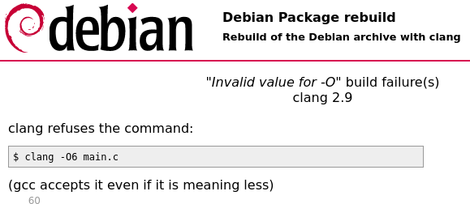
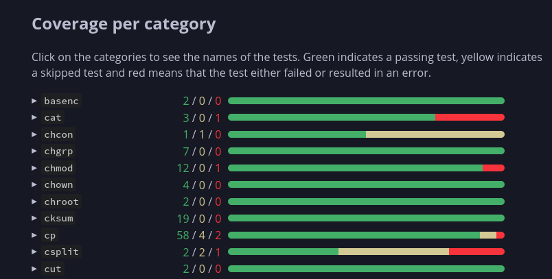
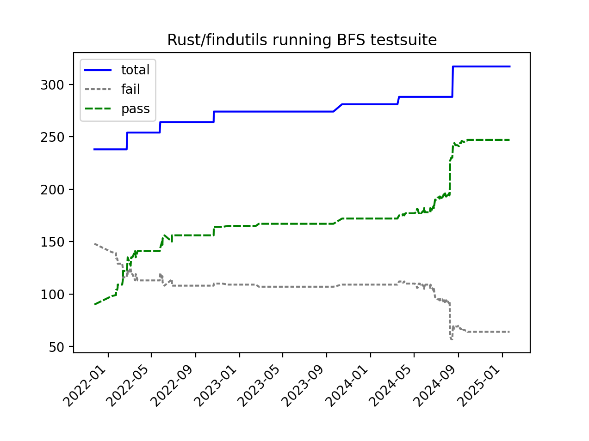

class: center, middle, inverse # Rewriting the future of the Linux essential packages in Rust ? ## Sylvestre Ledru - sylvestre@debian.org ## FOSDEM<br />Saturday February 1st 2025 --- # Who am I? Debian developer (~20+ years), LLVM/Clang contributor, and other things. Director at Mozilla (but this work is unrelated to Mozilla). --- # Who am I ? (bis) I also uploaded the initial version of Rustc in Debian/Ubuntu. And maintainer of ripgrep, fd and some others Rust based packages in Debian/Ubuntu. --- # Summary 1. Quiz? 2. The Rust Coreutils 3. Demo 4. Proposition? --- class: center, middle, inverse template: inverse # Before we start, a quick quiz! --- # Question 1 **Who has strong opinions about GPL vs BSD/MIT licenses?** -- I don't. --- # Question 2 **Who has strong opinions about the GNU project?** -- I don't. I still contribute to a few GNU projects. --- # Question 3 **Who has strong opinions about C?** -- Here, I do. C is a language from the past. It is the new Fortran/Cobol. It is time to move on. --- # Question 4 **Who has strong opinions about Rust?** -- OK, let's dive in! --- class: center, middle, inverse template: inverse # Let me tell you a story --- # Early 2020 <img src="covid-1.png" height="150"/> <hr /> <img src="covid-2.png" height="150"/> <hr /> <img src="covid-3.png" height="80"/> --- class: center, middle, inverse template: inverse # How to make the best use of this time? --- # People spent time differently <div style="display: flex; justify-content: space-between; align-items: center;"> <div style="flex: 1; text-align: center;"> <p>Some people made</p> <img src="pain.jpg" height="400"/> </div> <div style="flex: 1; text-align: center;"> <p>Others did some gardening, wood working, etc</p> <img src="bois-serge.jpg" height="400"/> </div> </div> --- # Or at home <img src="lego.png" /> --- # Me? I wanted a COVID project to learn Rust with something impactful. --- class: center, middle, inverse template: inverse # What about reimplementing the Coreutils in Rust ? --- # What about the Coreutils ? I have always been curious to see how it works. -- I was inspired by the work on Clang. -- Dropped in replacement for gcc. Missing flags are treated as bugs. I helped when I started rebuilding Debian with https://clang.debian.net -- <p></p> --- # What is it? About 105 commands in the GNU implementation. Some of the less famous: ```bash fold printenv tsort groups mknod printf tty ptx stdbuf stty unexpand basenc dir hostid readlink dircolors realpath chcon dirname nl relpath tac join vdir numfmt runcon expand link od paste shred comm factor logname pathchk pinky csplit fmt pr truncate ``` --- # What is it? About 105 commands in the GNU implementation. The famous: ```bash arch cut mkfifo split base32 date stat base64 dd hashsum mktemp uname basename df head more pwd mv sum uniq cat hostname nice sync unlink id uptime chgrp du install nohup rm tail users chmod echo nproc rmdir tee chown env kill test wc chroot seq timeout who cksum expr ln touch whoami shuf tr yes cp false ls sleep true mkdir sort ``` --- # What is it? About 105 commands in the GNU implementation. Full list: ```bash arch cut fold mkfifo printenv split tsort base32 date groups mknod printf stat tty base64 dd hashsum mktemp ptx stdbuf uname basename df head more pwd stty unexpand basenc dir hostid mv readlink sum uniq cat dircolors hostname nice realpath sync unlink chcon dirname id nl relpath tac uptime chgrp du install nohup rm tail users chmod echo join nproc rmdir tee vdir chown env kill numfmt runcon test wc chroot expand link od seq timeout who cksum expr ln paste shred touch whoami comm factor logname pathchk shuf tr yes cp false ls pinky sleep true csplit fmt mkdir pr sort truncate ``` --- class: center, middle, inverse template: inverse # Fast forward 5 years after --- # Fast forward 5 years after I have more grey hairs. -- <img src="contributor.png" /> -- <img src="github-stats-2025.png" /> --- # Comparing with GNU's project test suite <div style="display: flex; justify-content: space-between; align-items: center;"> <div style="flex: 1; text-align: center;"> <img src="gnu-results.png" height="450" /> </div> <div style="flex: 1; text-align: left;"> <p style="font-size: 14px;"> Tue, 20 Apr 2021:<br /> "total": "624",<br /> "pass": " 139",<br /> "skip": " 92",<br /> "fail": " 368",<br /> "error": "23"<br /> <br /> =><br /> <br /> Sat, 25 Jan 2025:<br /> "total": "617",<br /> "pass": "499",<br /> "skip": "42",<br /> "fail": "76",<br /> "error": "0"<br /> </p> </div> </div> https://github.com/uutils/coreutils-tracking/ --- # More and more programs are 100% compliant with GNU's tests <p></p> https://uutils.github.io/coreutils/docs/test_coverage.html --- # Current status? We are production ready! -- Supports Linux, Mac, Windows, Android, OpenBSD, FreeBSD, NetBSD, Solaris, Illumos, Fuchsia, Redox, WASM, etc -- And used in production: -- * This laptop! -- * In cars/IoT with Apertis -- * In Snapchat Spectacles via the Yocto project -- * Microsoft is using it for VSCode web<br /> https://code.visualstudio.com/blogs/2023/06/05/vscode-wasm-wasi -- * Probably elsewhere -- Available on (almost?) all distros, some ship by default. --- class: center, middle, inverse template: inverse # Why Rust rocks for this? --- # Rust rocks for this? 1/2 -- 1. Rust is replacing C in more and more places (Browsers, Kernel, OS, etc). -- 2. Rust rocks - security model, easy parallelism, terrific performances, etc... -- 3. It is NOT about security<br /> https://security-tracker.debian.org/tracker/source-package/coreutils<br /> Only 17 CVE in GNU/Coreutils since 2003 -- 4. It is NOT about license (for me at least).<br /> Not interested by the MIT vs GPL debate. --- # Rust rocks for this? 2/2 -- 5. Very portable (like Java, write once, run everywhere ;) ). -- 6. Terrific ecosystem of crates (Rust libraries). `cargo add foo` is often enough to add a build dep. -- 7. As developer, it is very interesting. -- 8. For the new generations of hackers, Rust is more appealing. --- class: center, middle, inverse template: inverse # Demos time With some product placements --- # Demo 1 <!-- cp --version ls --colour cp -R --progress target/ /tmp b3sum (works like b2sum) --> --- # Demo 2 How easy is it run tests <!-- SPEAK SLOW cargo test --features unix test_sort --> --- # Demo 3 Benchmarking -- Sometimes, we are faster, sometimes, we are slower. <!-- /usr/bin/sort --version wc -l shakespeare.txt wc -l moliere.txt hyperfine "./target/debug/coreutils sort shakespeare.txt" "/usr/bin/sort shakespeare.txt" => Dumb joke cargo build --features unix --release hyperfine "./target/release/coreutils sort shakespeare.txt" "/usr/bin/sort shakespeare.txt" --> --- # Demo 4 Profiling <!-- echo '1' | sudo tee /proc/sys/kernel/perf_event_paranoid samply record ./target/debug/coreutils sort shakespeare.txt cp ./target/debug/coreutils ./target/debug/coreutils.prev patch -p1 < sort.diff cargo build --features unix samply record ./target/debug/coreutils sort shakespeare.txt hyperfine "./target/debug/coreutils.prev sort shakespeare.txt" "./target/debug/coreutils sort shakespeare.txt" "/usr/bin/sort shakespeare.txt" --> <!-- cd /home/sylvestre/dev/debian/uutils.github.io remove draft commit & git push --> --- # More about this project -- * Has been supported by Sovereign Tech Fund in 2023 and Google summer of code 2024. -- * Proper CI (and therefore build system) for most of the supported platforms -- * Excellent code coverage - Currently <b>87.80%</b> -- * Lot of variations of job/compilations -- * Upstream (GNU) contributions for bugs, test suites, etc -- * Fuzzing of some of the commands (including differential fuzzing). -- ``` Running test ["expr", "49", "<", "27", "%", "75S"] Test Type: expr Input: ["49", "<", "27", "%", "75S"] Rust stderr: Expected an integer operand GNU stderr: non-integer argument Discrepancy detected: stderr differs Test completed with discrepancies for expr: ["49", "<", "27", "%", "75S"] ``` --- class: center, middle, inverse template: inverse # OK, Coreutils - done. What is next? --- # An old Chinese proverb The best time to plant a tree was twenty years ago. -- The second best is now. -- <br /> <br /> Coreutils have been around for 55 years! -- ``` Date: Tue Jun 30 05:00:00 1970 -0500 ``` <a href="https://archive.softwareheritage.org/swh:1:dir:602df0b42085a30f0bdcb864063a4ad7922770d7;origin=https://github.com/dspinellis/unix-history-repo;visit=swh:1:snp:6e90639ed08c76dbf81928f565a97215b1cb56d9;anchor=swh:1:rev:16fdb215eeab60c2e7b8d624b22bdc9c0422484f">See sources on Software Heritage</a> -- It is likely that they will survive for at least decades. <br /> Maybe the first software to survive for 100 years?! -- These tools should continue to evolve. -- .footnote[Actually, it isn't a Chinese proverb but it looks cool] --- # We already started We have been working on findutils and diffutils. <p></p> -- But I want to tell you about the big plan. --- # Big plan We want to do the same with most of the essential packages on Debian/Ubuntu. There isn't a better time than now. -- What are the essential packages? ``` $ dpkg-query -Wf '${Package;-40}${Essential}\n' | grep yes$ ``` --- # The list * procps: free, kill, ps, top, watch, ... -- pwdx, tload, slabtop, etc -- * util-linux: dmesg, getopt, hardlink, lscpu, su, ... -- mcookie, choom, etc -- * acl: getfacl, setfacl, ... -- * bsdutils: renice, wall, logger, ... -- * hostname: hostname, domainname, ... -- * login: login, etc --- # Status? * All of these projects are already on https://github.com/uutils/ -- * Reuses the infrastructure and code from coreutils (ex: our uucore libs) -- * Some completed programs, some as POC, other not started. -- * Easy to plug new tools -- * Good first bugs for all projects to start with (new programs, missing options, compat issues, CI work, etc) Lot of low hanging fruits An example with acl: https://github.com/uutils/acl/issues?q=is:issue%20state:open%20label:%22good%20first%20issue%22 --- # Why do you think it will work? * There is an appetite from the community. -- * We need to pave the way for the young generation. C developers are probably going to be less common. -- * We have reference implementations, it is "easy" to test. -- * We are using modern contribution and pipelines. -- * It is a bottom up community approach, no big tech behind it. --- class: center, middle, inverse template: inverse # Now, make this project public --- class: center, middle, inverse template: inverse # Thanks for your time --- class: center, middle, inverse template: inverse # Reminder: not a Mozilla project. --- class: center, middle, inverse template: inverse # Let's try together